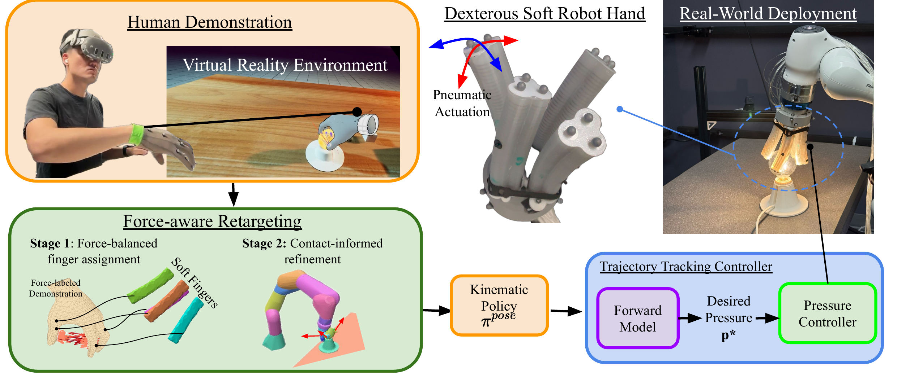

Method

Data Collection in Virtual Reality
Demonstrations are captured using an OptiTrack motion capture system (10 cameras, 24 markers) mapped to a kinematic hand model inside an Unreal Engine VR environment. At every timestep we record the tuple (Bt, Vt, Ct) — hand body pose, object pose, and the full contact set. Each contact in Ct contains a surface location c ∈ ℝ³ and a force vector f ∈ ℝ³. Collecting in simulation yields precise, noise-free contact measurements that are difficult to obtain in the real world.
The goal is to learn a robot control policy π(at | ot) that achieves functionally equivalent object interactions, using the rich contact and force information captured during human demonstration.
Human demonstrations across the six manipulation tasks, captured in VR with contact force heatmaps overlaid on the hand.
Stage 1 Force-Balanced Finger Assignment
Contact information must propagate along the hand surface, not through free space — Euclidean distance would incorrectly couple physically unrelated regions. We measure surface distances using mesh geodesics and diffuse contact forces over the hand mesh with a geodesic heat kernel: each vertex accumulates a heat value weighted by nearby contact force magnitudes and geodesic proximity.
Heat values are summed within each skeleton finger region to estimate the total contact load per finger. Robot fingers are then allocated by solving a minimax assignment — distributing load as evenly as possible across the available robot fingers, allowing many-to-one mappings that remain fixed throughout execution.
Stage 2 Contact-Informed Refinement
During execution each soft finger tracks its assigned human fingertip while incorporating local contact geometry. Each demonstrated contact contributes a geodesic-weighted influence based on surface proximity and force magnitude. The fingertip target is then adjusted by the force-weighted mean displacement toward nearby contacts, clamped to a maximum step size, producing contact-informed trajectories used for imitation learning.

VR Demo (Left) Average contact force distribution on the human hand for each task. Warmer colors indicate higher contact load. (Right) Representative demonstration frames from the VR environment.
Soft Robot Hand
We use a custom non-anthropomorphic pneumatic soft robot hand with four three-chambered fingers arranged in a square configuration. Each finger is fabricated from elastomer with embedded rigid rings, and bends via differential pressurization of its three chambers — producing planar constant-curvature deformation. The hand mounts on a 7-DoF robot arm and is driven by a pneumatic pressure controller.
Single Finger Module: elastomer body, rigid rings, and three-chamber pressurization.
Simulation model: virtual spine structure with torque-driven actuation used for policy training.
Low-Level Pressure Controller
Pressure–deformation relationships in soft fingers are highly nonlinear and vary across the workspace. We learn a per-finger forward kinematic MLP mapping chamber pressures to fingertip displacement, then invert it at runtime via gradient descent to find the pressures that achieve a desired tip position. Actuator limits are enforced with a sigmoid reparameterization, and each solve is warm-started from the previous solution. This yields significantly more accurate tracking than direct prediction baselines.